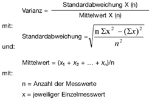

1 |
Allgemeines
|
| 1.1 |
Anwendungsbereich
Diese Anlage regelt die Anforderungen an Partikelminderungssysteme, die für eine Nachrüstung von mit
Selbstzündungsmotor angetriebenen Nutzfahrzeugen oder mobilen Maschinen und Geräten, für die oder
deren Motor § 47 Absatz 6 oder Absatz 8b gilt, vorgesehen sind. Im Sinne dieser Vorschrift gelten als Nutzfahrzeuge
| a)
| Kraftfahrzeuge der Klasse M, ausgenommen Personenkraftwagen (M1)
|
| b)
| Kraftfahrzeuge der Klasse N
|
nach Anhang II Abschnitt A und Abschnitt C der Richtlinie 70/156/EWG die mit Selbstzündungsmotor angetrieben und mit Dieselkraftstoff nach der Richtlinie 98/70/EG betrieben werden.
|
| 1.2 |
Begriffsbestimmungen und Abkürzungen
Beladungszustand:
Konstanter Partikelbeladungszustand des Partikelminderungssystems unter bestimmten Fahrzuständen
ohne externe Regenerationsmaßnahmen.
ESC-Prüfzyklus:
Prüfzyklus – bestehend aus 13 stationären Prüfphasen – nach Anhang III Anlage 1 der Richtlinie 2005/55/EG in der Fassung der Richtlinie 2006/51/EG (ABl. L 152 vom 7.6.2006, S. 11).
ELR-Prüfzyklus:
Prüfzyklus – bestehend aus einer Folge von Belastungsschritten bei gleich bleibenden Drehzahlen – nach Anhang III Anlage 1 der Richtlinie 2005/55/EG in der Fassung der Richtlinie 2006/51/EG.
ETC-Prüfzyklus:
Prüfzyklus – bestehend aus instationären, wechselnden Phasen – nach Anhang III Anlage 2 der Richtlinie 2005/55/EG in der Fassung der Richtlinie 2006/51/EG.
NRSC-Zyklus:
Stationärer Test für mobile Maschinen und Geräte nach Anhang III Nummer 3 der Richtlinie 97/68/EG in der Fassung der Richtlinie 2004/26/EG.
NRTC:
Dynamischer Test für mobile Maschinen und Geräte nach Anhang III Nummer 4 der Richtlinie 97/68/EG in der
Fassung der Richtlinie 2004/26/EG.
Partikelminderungssystem (PMS):
Eine Abgasnachbehandlung zur Verringerung der Partikelemission durch mechanische und/oder aerodynamische
Separation sowie durch Diffusions- und/oder Trägheitseffekte. Motorspezifische Änderungen an
Bauteilen und elektronischen Bauteilen und elektronischen Komponenten zählen nicht zu den Partikelminderungssystemen.
Sind jedoch für die Nachrüstung mit dem PMS zusätzliche Maßnahmen an emissionsrelevanten
Bauteilen und/oder Systemkomponenten wie beispielsweise eine Änderung der Abgasrückführungs(AGR)-Regelung zu weiteren einwandfreien Funktion notwendig, muss hierfür eine Freigabe durch den
Motorenhersteller vorliegen.
Geregeltes Partikelminderungssystem:
Partikelminderungssystem, das einen nach Nummer 5 oder Nummer 6 ermittelten gravimetrischen Partikelrückhaltegrad
von mindestens 90 Prozent besitzt.
Kontinuierliche Regeneration:
Regenerationsprozess eines Nachbehandlungssystems, der dauerhaft oder wenigstens einmal pro Prüfzyklus
abläuft.
Ungeregeltes Partikelminderungssystem:
Partikelminderungssystem, welches einen nach Nummer 5 oder Nummer 6 ermittelten gravimetrischen
Partikelrückhaltegrad von mindestens 50 Prozent besitzt. Für Motoren mit einem Hubraum von unter 0,75 dm3
je Zylinder und einer Nennleistungsdrehzahl von über 3 000 min-1 gilt ein Partikelrückhaltegrad von mindestens
30 Prozent.
Partikelminderungssystemfamilie:
Familie aller Partikelminderungssysteme, die in ihrer Funktion als technisch identisch nach den Übereinstimmungskriterien
für Systemfamilien in Nummer 7.1 angesehen werden.
Periodisch regenerierendes Partikelminderungssystem:
Partikelminderungssystem, bei dem eine periodische Regeneration wiederkehrend in weniger als 100 Stunden
Motorbetrieb abläuft.
Rückhaltegrad:
Verhältnis von zurückgehaltener Partikelmasse durch das Partikelminderungssystem zu der Partikelmasse
im Ausgangszustand des Fahrzeugs, gemessen im ESC-Prüfzyklus für PMK 0 und PMK 1 und im ETC-Prüfzyklus
für PMK 2 bzw. im NRSC-Zyklus für PMK 0, PMK 1 und NRTC-Zyklus für PMK 2 und berechnet
nach der Formel in Nummer 5.1 oder Nummer 6.1.
Abkürzungen :
| η: |
Rückhaltegrad |
| Mpi: |
gewichtete Gesamtemission (g/kWh) bei geregelten Partikelminderungssystemen |
| Mri: |
Emission während der Regeneration |
| Msi: |
über mehrere Zyklen gemessene gemittelte Emission ohne Regeneration (g/kWh) |
| MGas: |
Emission der gasförmigen Komponenten |
| PT: |
Partikelemission |
| PTNg: |
arithmetisch gemittelte Partikelemission im nachgerüsteten Zustand nach Nummer 4.1 oder Nummer
6 |
| PTS: |
arithmetisch gemittelte Partikelemission des Motors ohne Partikelminderungssystem aus mindestens
zwei Zykluswerten des jeweils anzuwendenden Zyklus |
| VF: |
Volumen des Partikelminderungssystems |
| VH: |
Hubvolumen des Motors |
|
2 |
Definitionen der Partikelminderungsstufen
Mit einem Partikelminderungssystem nachgerüstete Nutzfahrzeuge gehören zur Partikelminderungsklasse
| a) |
PMK 01, wenn sie die in Nummer 3.4.1, |
| b) |
PMK 0, wenn sie die in Nummer 3.4.2 unter Abschnitt 1, 2 oder 3, |
| c) |
PMK 1, wenn sie die in Nummer 3.4.3 unter Abschnitt 1, 2 oder 3, |
| d) |
PMK 2, wenn sie die in Nummer 3.4.4 unter Abschnitt 1, 2 oder 3, |
| e) |
PMK 3, wenn sie die in Nummer 3.4.5 unter Abschnitt 1, |
| f) |
PMK 4, wenn sie die in Nummer 3.4.6 |
der Anlage XIV beschriebenen Anforderungen einhalten.
|
3 |
Anforderungen an Partikelminderungssysteme
Der Antragsteller muss durch die in den Nummern 4 und 5 oder 6 beschriebenen Prüfungen belegen und bestätigen, dass die Funktionsfähigkeit des Systems bei bestimmungsgemäßem Betrieb in
| a)
| Nutzfahrzeugen über eine Kilometerleistung von 80 000 km bei Motoren mit einem Hubraum von unter 0,75 dm3 je Zylinder und einer Nennleistungsdrehzahl von über 3 000 min-1, ansonsten von 200 000 km oder über eine Lebensdauer von bis zu sechs Jahren – je nachdem, welches Kriterium zuerst erreicht wird –,
|
| b)
| mobilen Maschinen oder Geräten über 4 000 Betriebsstunden oder über eine Lebensdauer von bis zu sechs Jahren – je nachdem, welches Kriterium zuerst erreicht wird –
|
gewährleistet ist. Die Partikelminderungssysteme dürfen nicht mit Einrichtungen ausgerüstet sein, die diese Systeme außer Funktion setzen; ansonsten gelten die Anforderungen nach Nummer 3.2.
|
| 3.1 |
Übereinstimmungskriterien
Das Partikelminderungssystem darf in folgenden Merkmalen nicht abweichen:
| a) |
Rückhalteart und Arbeitsweise Minderungsmaterial (Metall, Keramik), |
| b) |
Minderungskonstruktion des Filtermaterials (Platten, Geflecht, gewickelt, Zellen-/Material-/Vliesdichte,
Porosität, Porendurchmesser, Taschen-/Schaufel-/Kugelanzahl, Oberflächenrauigkeit, Draht-/Kugel-/Faserdurchmesser), |
| c) |
Mindestbeschichtung des Partikelminderungssystems bzw. vorgeschalteter Katalysatoren (g/ft3), |
| d) |
Canning/Verpackung (Lagerung/Halterung des Trägers), |
| e) |
Volumen ± 30 Prozent, |
| f) |
Regenerationstyp (periodisch oder kontinuierlich), |
| g) |
Regenerationsstrategie (katalytische, thermische, elektrothermische Regeneration), |
| h) |
Art der Additivierung/des Dosiersystems (falls vorhanden), |
| i) |
Typ des Additivs (falls vorhanden), |
| j) |
Anbringungsgegebenheiten (max. + 0,5 m Anbringungsdifferenz zwischen Turboladerausgang (Turbine)
und Einlass Partikelminderungssystem), |
| k) |
mit oder ohne vorgeschaltetem Oxidationskatalysator. |
Weiterverwendung des oder der vorhandenen Oxidationskatalysator(en):
Dem Minderungssystem vorgeschaltete Oxidationskatalysatoren können bei der Nachrüstung im Einzelfall
weiter verwendet werden, wenn diese nachweislich:
| a) |
nicht älter als 5 Jahre sind, |
| b) |
bei Motoren mit einem Hubraum von unter 0,75 dm3 je Zylinder und einer Nennleistungsdrehzahl von
über 3 000 min-1 nicht länger als 80 000 km, ansonsten 150 000 km im Fahrzeug verbaut waren (Nachweis
der Laufleistung über Serviceheft und Wegstreckenzähler) und |
| c) |
nicht mit sichtbaren Mängeln behaftet sind oder |
| d) |
der Hersteller des Partikelminderungssystems im Rahmen der unter Nummer 8 geforderten Betriebserlaubnis
nachweist, dass die entsprechend geforderten Grenzwerte auch ohne den/die serienmäßigen
Oxidationskatalysator(en) eingehalten werden (Betriebserlaubnis muss Nachweis enthalten). |
Wird keiner der vorgenannten Nachweise erbracht, sind die Oxidationskatalysatoren vor der Nachrüstung
mit dem Partikelminderungssystem zu erneuern.
Zur Prüfung des Partikelminderungssystems auf dem Motorenprüfstand muss das System mindestens in
einem Abstand von 2 m zum Ausgang des Turboladers (Turbine) angebracht werden. Kann der Antragsteller
nachweisen, dass innerhalb seines späteren Verwendungsbereichs ein kürzerer Abstand als maximaler Abstand
zu betrachten ist, kann die Leitungslänge entsprechend gekürzt werden. Isolationen oder ähnliches
sind nur zulässig, wenn diese auch im späteren Fahrzeugeinsatz Verwendung finden.
|
| 3.2 |
Aktive Einrichtungen
Sind im oder mit dem PMS Einrichtungen vorhanden und verbaut, die dazu führen, dass unter bestimmten
Voraussetzungen die für das System nach Nummer 2 bestimmten Grenzwerte nicht mehr eingehalten werden,
so muss der Antragsteller nachweisen,
| a) |
unter welchen Bedingungen solche Einrichtungen aktiviert/deaktiviert werden, |
| b) |
dass sie lediglich zum Schutze des PMS oder des Motors und/oder der Regeneration des PMS dienen
und nicht dauerhaft aktiviert werden, |
| c) |
dass nach einer Aktivierung die Einrichtung nach spätestens zwei für das System nach Nummer 2 bestimmten
Prüfzyklen derart deaktiviert wird, dass der ursprüngliche Zustand wieder hergestellt ist. Der
Nachweis muss in einem Dauerlauf, der mindestens fünf Aktivierungen/Deaktivierungen beinhaltet, erbracht
werden, |
| d) |
dass die vorgegebenen Dauerhaltbarkeitskriterien eingehalten werden und |
| e) |
dass der Fahrer über die Aktivierung einer solchen Einrichtung informiert wird. |
|
| 3.3 |
Kraftstoff
|
| 3.3.1 |
Kraftstoffqualität
Die zur Prüfung der Partikelminderungssysteme heranzuziehenden Messungen erfolgen mit handelsüblichen
Kraftstoffen nach Nummer 1.1.
|
| 3.3.2 |
Kraftstoffverbrauch
Der auf den jeweilig anzuwendenden Prüfzyklus bezogene spezifische Kraftstoffverbrauch darf im nachgerüsteten
Zustand maximal 4 Prozent über dem spezifischen Verbrauch im nicht nachgerüsteten Zustand liegen.
Die Messungen zur Bestimmung des Kraftstoffverbrauchs erfolgen parallel zu den Messungen nach
Nummer 4.1 für kontinuierlich regenerierende Systeme oder nach Nummer 6.2.1 für periodisch regenerierende
Systeme.
|
4 |
Prüfung eines Partikelminderungssystems
Der Ablauf der Prüfung erfolgt nach den Vorgaben von Anhang I.
Für die Begutachtung des Partikelminderungssystems muss zum Beweis der Funktionstüchtigkeit im späteren
Feldeinsatz ein Dauerlauf von mindestens 100 ETC-Prüfzyklen bzw. 50 NRTC-Zyklen durchgeführt
werden. Der Dauerlauf dient dem Nachweis der Funktionstüchtigkeit und der Stabilität des Systems sowie
dessen Wirkungsgrad. Die Messung der gasförmigen Emissionen sowie die der Partikel sollte mindestens
in jedem fünften Prüfzyklus durchgeführt werden. Die Prüfung des Partikelminderungssystems erfolgt system-
oder familiengebunden für den jeweiligen Verwendungsbereich, das heißt je Verwendungsbereich erfolgt
eine Systemprüfung.
Darüber hinaus wird durch den Dauerlauf der Nachweis erbracht, ob es sich um ein kontinuierlich oder
periodisch regenerierendes Partikelminderungssystem handelt.
Kann der Antragsteller nachweisen, dass ein für Fahrzeuge der Klasse M, ausgenommen M1, oder der
Klasse N geprüftes Partikelminderungssystem baugleich Verwendung an Selbstzündungsmotoren zum Einsatz
in mobilen Maschinen und Geräten Verwendung findet und der Familien-Prüfmotor nach Nummer 4.2
sowie die Übereinstimmungskriterien nach Nummer 7.1.2 ebenso für solche Anwendungen repräsentativ
sind, kann der Anwendungsbereich auch auf Selbstzündungsmotoren zum Einsatz in mobilen Maschinen
und Geräten erweitert werden. Eine umgekehrte Erweiterung ist nicht möglich.
|
| 4.1 |
Nachweis der kontinuierlichen Regeneration
Der Nachweis für einen kontinuierlich ablaufenden Regenerationsprozess gilt als erbracht, wenn über einen
Zeitraum von mindestens 25 Prüfzyklen eine geeignete Bewertungsgröße am Partikelminderungssystem als
konstant betrachtet werden kann. Als geeignete Bewertungsgrößen sind die Partikelemission sowie der
Abgasgegendruck anzusehen. Diese Größen gelten bei einer Varianz unter 15 Prozent über 25 Prüfzyklen als
konstant im Sinne dieser Prüfvorschrift. Die Messung des Abgasgegendrucks erfolgt hierbei kontinuierlich,
die Messung der Partikelemission mindestens in jedem fünften Prüfzyklus.
Die Varianz berechnet sich wie folgt:

|
| 4.2 |
Auswahl des Familien-Prüfmotors
Der für die Prüfungen ausgewählte Motor sollte aus einer dem späteren Verwendungsbereich entsprechenden
Motorenfamilie stammen.
Der Prüfmotor für den gewählten Verwendungsbereich muss folgende Kriterien erfüllen:
- 100 Prozent bis 60 Prozent Leistung des Stamm-Motors im Verwendungsbereich (Stamm-Motor einer Motorenfamilie
nach Anhang I Nummer 8.2 bzw. Anhang I Nummer 7 der in Nummer 7.1.2 genannten Richtlinien),
- kleinstes angewendetes Filtervolumen (VFI) für den gewählten Prüfmotor entsprechend der späteren Verwendung.
Als Prüfzyklus für die Abgasmessungen von Motoren für Nutzfahrzeuge auf dem Motorenprüfstand ist in
allen Fällen der angepasste ESC-Prüfzyklus nach Anhang V und für PMK 2 auch der ETC-Prüfzyklus anzuwenden.
Für Motoren für mobile Maschinen und Geräte ist für PMK 0 und PMK 1 der NRSC-Zyklus und für
PMK 2 der NRTC-Zyklus anzuwenden. Die Messung der gasförmigen Emissionen sowie die der Partikel
sollte mindestens in jedem fünften Prüfzyklus innerhalb der Messungen zum Nachweis des Regenerationsverhaltens
erfolgen.
|
| 4.3 |
Prüfung des Regenerationsverhaltens bei ungeregelten Systemen
Ungeregelte Partikelminderungssysteme nach Nummer 1.2 sind einer weiteren Prüfung zum Nachweis des
Regenerationsverhaltens zu unterziehen.
Diese Prüfung erfolgt über eine Systembeladung bis zum Erreichen eines konstanten Abgasgegendrucks
oder über eine Zeitdauer von höchstens 100 Stunden. Der Abgasgegendruck gilt als konstant, wenn frühestens nach
50 Stunden innerhalb eines Zeitraumes von 30 Minuten der Abgasgegendruck innerhalb eines Bereichs von 4 mbar liegt. Die Prüfpunkte des Beladungs-Zyklus sind so zu wählen, dass eine maximale Abgastemperatur von
180 °C vor dem Partikelminderungssystem nicht überschritten wird. Die Beladung erfolgt vorzugsweise
durch Anfahren einer konstanten Drehzahl im Bereich zwischen 50 Prozent bis 75 Prozent der Nenndrehzahl des
Prüfmotors.
Nach Erreichung der Systembeladung oder nach höchstens 100 Stunden wird eine Regeneration eingeleitet. Diese
kann beispielsweise durch das Anfahren der Prüfphase 8 im angepassten ESC-Prüfzyklus nach Anhang V
veranlasst werden. Nach Abschluss der Regeneration sind Abgasmessungen in mindestens drei ESC-Prüfzyklen
nach Anhang V und/oder drei ETC-Prüfzyklen bzw. drei NRSC- oder NRTC-Zyklen durchzuführen.
Die dabei gemessenen Abgaswerte dürfen um nicht mehr als 15 Prozent für die gasförmigen Emissionen und
20 Prozent für die Emissionen der Partikelmasse von den gemessenen Abgaswerten vor dem Beladungs-Dauerlauf
abweichen.
Der Hersteller muss bestätigen, dass die bei der Regeneration eintretenden Temperaturen maximal als
unkritisch einzustufen sind.
Alternativ zum Beladungs-Dauerlauf kann der Hersteller ein bereits grenzbeladenes Partikelminderungssystem
zur Regenerations-Prüfung vorstellen.
|
| 4.4 |
Prüfung der Rauchgastrübung im ELR-Prüfzyklus
Die Prüfung der Rauchgastrübung ist nach den Bestimmungen von Anhang III Anlage 1 Nummer 3 in Verbindung mit Nummer 6 der Richtlinie 2005/55/EG in der Fassung der Richtlinie 2006/51/EG (ABl. L 152 vom 7.6.2006, S. 11) durchzuführen. Im Anhang I ist festgelegt, wann diese Prüfung erfolgen muss.
|
5 |
Bewertungskriterien für kontinuierlich regenerierende Partikelminderungssysteme
Der Ablauf der Prüfung erfolgt nach den Vorgaben von Anhang I. Die Systemprüfung des Partikelminderungssystems
gilt als bestanden, wenn folgende Kriterien erfüllt sind:
|
| 5.1 |
Rückhaltegrad
Der Rückhaltegrad η muss im nachgerüsteten Zustand
| a) |
bei ungeregelten Systemen für Motoren mit einem Hubraum von unter 0,75 dm³ je Zylinder und einer
Nennleistungsdrehzahl von über 3 000 min-1 mindestens 0,3 (= 30 Prozent), ansonsten mindestens
0,5 (= 50 Prozent), |
| b) |
bei geregelten Systemen mindestens 0,9 (= 90 Prozent) |
erreichen.
Der Rückhaltegrad η berechnet sich wie folgt:
η = 1 - (PTNg/PTS).
|
| 5.2 |
Limitierte Schadstoffe
Die limitierten Schadstoffe (CO, HC, NOx) müssen im Ausgangszustand und im nachgerüsteten Zustand die
Grenzwerte der ursprünglich homologierten Schadstoffklasse einhalten. Das NO2/NOx-Verhältnis ist für den
Ausgangs- und Nachrüstzustand zu dokumentieren und im Prüfbericht anzugeben.
Die Bestimmung der NO2- und NOx-Massenemissionen ist durch simultane Messung zu bestimmen. Die
Messung kann durch jeweils einen NO2- und NOx-Analysator oder durch einen kombinierten NO2-/NOx-Analysator erfolgen.
|
| 5.3 |
Rauchgastrübung
Die nach Anhang III Anlage 1 Nummer 3 in Verbindung mit Nummer 6 der Richtlinie 2005/55/EG ermittelte Rauchgastrübung darf im Ausgangszustand und im nachgerüsteten Zustand den Wert von 0,8 m-1 nicht überschreiten.
|
6 |
Bewertungskriterien für periodisch regenerierende Partikelminderungssysteme
Der Ablauf der Prüfung erfolgt nach den Vorgaben von Anhang I.
Die Systemprüfung des Partikelminderungssystems gilt als bestanden, wenn folgende Kriterien erfüllt sind:
Für periodisch regenerierende Systeme wird die Partikelemission wie folgt bestimmt:
PT = (n1 x PT,n1 + n2 x PT,n2)/(n1 + n2)
mit:
| n1 = |
Anzahl der angepassten ESC-Prüfzyklen nach Anhang V (PMK 0, PMK 1)/ETC-Prüfzyklus
(PMK 2) zwischen zwei Regenerationen |
| n2 = |
Anzahl der angepassten ESC-Prüfzyklen nach Anhang V (PMK 0, PMK 1)/ETC-Prüfzyklus
(PMK 2) während der Regeneration (Minimum jeweils 1 Prüfzyklus) |
| PT,n1 = |
Emission während der Beladung (arithmetischer Mittelwert aus der Messung zu Beginn der
Beladung und aus der Messung zum Ende der Beladung; es sind auch mehr Messungen
zulässig) |
| PT,n2 = |
Emission während der Regeneration |
Für eine periodisch regenerierende Abgasnachbehandlung müssen die Emissionen mindestens in drei angepasste
ESC-Prüfzyklen nach Anhang V (einmal zu Beginn, einmal zu Ende der Beladung und einmal
während der Regeneration) bestimmt werden. Der Regenerationsprozess muss wenigstens einmal während
eines angepassten ESC-Prüfzyklus nach Anhang V auftreten. Die Messungen können innerhalb des Dauerlaufs
nach Nummer 4.1 erfolgen.
Werden mehr als zwei Messungen zwischen den Regenerationsphasen zur Emissionsbestimmung herangezogen,
müssen diese weiteren Messungen in äquidistanten Abständen erfolgen und per arithmetischer
Mittelwertbildung zusammengefasst werden.
Der Hersteller muss angeben, unter welchen Bedingungen (Beladung, Temperatur, Gegendruck, Zeitdauer
usw.) die Regeneration im Normalfall auftritt. Für die Messungen während der Regeneration kann der Antragsteller
ein grenzbeladenes System zur Messung beistellen.
Während der Regenerationsphasen dürfen die jeweiligen heranzuziehenden Grenzwerte überschritten werden.
|
| 6.1 |
Rückhaltegrad
Der Rückhaltegrad η muss im nachgerüsteten Zustand
| a) |
bei ungeregelten Systemen für Motoren mit einem Hubraum von unter 0,75 dm3 je Zylinder und
einer Nennleistungsdrehzahl von über 3 000 min-1 mindestens 0,3 (= 30 Prozent), ansonsten mindestens
0,5 (= 50 Prozent), |
| b) |
bei geregelten Systemen mindestens 0,9 (= 90 Prozent) |
erreichen.
Der Rückhaltegrad η berechnet sich wie folgt: η = 1 - (PT/PTs).
|
| 6.2 |
Limitierte Schadstoffe
Die limitierten Schadstoffe (CO, HC, NOx) müssen unter Berücksichtigung der Berechnung in Nummer 6.2.1
im Ausgangszustand und im nachgerüsteten Zustand die Grenzwerte der ursprünglich homologierten
Schadstoffklasse einhalten. Das NO2/NOx-Verhältnis ist entsprechend Nummer 5.2 für den Ausgangs- und
Nachrüstzustand zu dokumentieren und im Prüfbericht anzugeben.
|
| 6.2.1 |
Gewichtete gasförmige Emissionen
Für periodisch regenerierende Systeme wird die Emission der gasförmigen Komponenten wie folgt bestimmt:
| MGas = |
(n1 x MGas,n1 + n2 x MGas,n2)/(n1 + n2) |
mit:
| n1 = |
Anzahl der angepassten ESC-Prüfzyklen nach Anhang V (PMK 0, PMK 1)/ETC-Prüfzyklus
(PMK 2) zwischen zwei Regenerationen |
| n2 = |
Anzahl der angepassten ESC-Prüfzyklen nach Anhang V (PMK 0, PMK 1)/ETC-Prüfzyklus
(PMK 2) während der Regeneration (Minimum jeweils 1 Prüfzyklus) |
| MGas,n1 = |
Emission während der Beladung (arithmetischer Mittelwert aus der Messung zu Beginn der
Beladung und aus der Messung zum Ende der Beladung; es sind auch mehr Messungen
zulässig) |
| MGas,n2 = |
Emission während der Regeneration |
|
| 6.3 |
Rauchgastrübung
Die nach Anhang III Anlage 1 Nummer 3 in Verbindung mit Nummer 6 der Richtlinie 2005/55/EG ermittelte Rauchgastrübung darf im Ausgangszustand und im nachgerüsteten Zustand den Wert von 0,8 m-1 nicht überschreiten.
|
7 |
Anforderungen an Partikelminderungssysteme zur Bildung einer Systemfamilie
Systemfamilien können mit Partikelminderungssystemen unterschiedlicher Größe (Volumen) unter Einhaltung
der Übereinstimmungskriterien nach Nummer 7.1 gebildet werden.
|
| 7.1 |
Übereinstimmungskriterien für Systemfamilien
|
| 7.1.1 |
Für die Festlegung des Verwendungsbereichs eines baugleichen Partikelminderungssystems, mit unterschiedlichen
Volumina, für verschiedene Motoren oder Fahrzeugtypen, dürfen sich die Versuchsträger in
den Merkmalen nach Nummer 3 nicht unterscheiden. Die Grenze des Verwendungsbereichs eines Systems wird je Motoren- bzw. Fahrzeughersteller durch Vermessen eines Prüfmotors nach Nummer 4.2 auf dem
Motorenprüfstand bestimmt.
|
| 7.1.2 |
Der Verwendungsbereich einer PMS-Systemfamilie erstreckt sich über die mit dem jeweiligen Prüfmotor nach Nummer 4.2 abgedeckte Motorenfamilie nach der Richtlinie 2005/55/EG oder der Richtlinie 97/68/EG in der Fassung der Richtlinie 2004/26/EG (ABl. L 225 vom 25.6.2004, S. 3) eines Motorenherstellers. Kann der Antragsteller nachweisen, dass weitere Motorenfamilien des durch den Prüfmotor abgedeckten Verwendungsbereichs eines Herstellers oder Motorenfamilien weiterer Hersteller hinsichtlich der Familienbildungskriterien identisch sind, kann der Verwendungsbereich auf diese Motorenfamilien ausgeweitet werden. Für die Ausweitung des Verwendungsbereichs gelten als Familienbildungskriterien ± 15 Prozent des Einzelzylinderhubvolumens sowie das Ansaugverfahren (Turbo-/Saugmotor).
|
| 7.2 |
Anforderungen an den Prüfmotor
Der Prüfmotor muss im Serienzustand und im nachgerüsteten Zustand bei allen limitierten Emissionen die
Werte der ursprünglich homologierten Grenzwertstufe einhalten.
Der Umbau am Prüfmotor muss dem beantragten späteren Serienstand der Umrüstung entsprechen.
Fahrzeuge mit "On-Board-Diagnose" dürfen durch den Einbau des Nachrüstsystems in ihrer Überwachungsfunktion
nicht eingeschränkt werden. Das elektronische Motorsteuergerät (z. B. für Einspritzung,
Luftmassenmesser, Abgasminderung) darf durch die Nachrüstung nicht verändert werden.
Hat der Prüfmotor keine Abgasrückführung (AGR), darf der Verwendungsbereich auf Motoren mit AGR nur dann ausgeweitet
werden, wenn der Antragsteller nachweisen kann, dass das Partikelminderungssystem keinen negativen Einfluss auf die limitierten
gasförmigen Schadstoffkomponenten nimmt. Liegt eine entsprechende Freigabe des Motorenherstellers
vor, ist kein Nachweis erforderlich.
|
| 7.3 |
Prüf- und Messablauf auf dem Motorenprüfstand
Im Anhang I ist der Prüfablauf für ungeregelte und geregelte Partikelminderungssysteme dargestellt.
|
| 7.4 |
Bewertung der Partikelminderungssysteme für den Verwendungsbereich innerhalb einer Motoren-/
Fahrzeugfamilie
Die Prüfung eines Partikelminderungssystems für den Verwendungsbereich gilt als bestanden, wenn folgende
Kriterien erfüllt sind:
|
| 7.4.1 |
Partikelemission
Die Partikelemission im nachgerüsteten Zustand muss unter dem Grenzwert der entsprechenden Minderungsstufe
PMK 0, PMK 1 oder PMK 2 liegen.
|
| 7.4.2 |
Rückhaltegrad
Der Rückhaltegrad η muss im nachgerüsteten Zustand
| a) |
bei ungeregelten Systemen für Motoren mit einem Hubraum von unter 0,75 dm3 je Zylinder und
einer Nennleistungsdrehzahl von über 3 000 min-1 mindestens 0,3 (= 30 Prozent), ansonsten mindestens
0,5 (= 50 Prozent), |
| b) |
bei geregelten Systemen mindestens 0,9 (= 90 Prozent) |
erreichen.
|
| 7.4.3 |
Rauchgastrübung
Die nach Anhang III Anlage 1 Nummer 3 in Verbindung mit Nummer 6 der Richtlinie 2005/55/EG ermittelte Rauchgastrübung darf im Ausgangszustand und im nachgerüsteten Zustand den Wert von 0,8 m-1 nicht überschreiten.
|
| 7.4.4 |
Limitierte gasförmige Komponenten
Die limitierten gasförmigen Komponenten müssen im Serienzustand und im nachgerüsteten Zustand die
Grenzwerte der ursprünglich homologierten Schadstoffklasse unterschreiten.
|
8 |
Genehmigung
Sollen durch Einbau von Partikelminderungssystemen die Emissionen luftverunreinigender Partikel von
bereits für den Verkehr zugelassenen Kraftfahrzeugen verringert werden, so ist für das Partikelminderungssystem
eine
| a) |
Betriebserlaubnis für Fahrzeugteile nach § 22 oder |
| b) |
Genehmigung im Rahmen einer Betriebserlaubnis für das Fahrzeug nach § 21 |
erforderlich.
Im Falle von Buchstabe a muss die Betriebserlaubnis für das Partikelminderungssystem die Einhaltung
einer der Partikelminderungsklassen PMK 0, PMK 1 oder PMK 2 nach den Bestimmungen dieser Anlage
nachweisen. Einzelheiten über die Verwendung des Partikelminderungssystems und des Einbaus ergeben
sich aus der Betriebserlaubnis.
Im Falle von Buchstabe b hat der mit der Begutachtung beauftragte amtlich anerkannte Sachverständige
festzustellen, ob das Kraftfahrzeug den Anforderungen der Partikelminderungsklasse PMK 0, PMK 1 oder
PMK 2 genügt. Er hat zudem nach pflichtgemäßem Ermessen zu beurteilen und gegebenenfalls mit einer
Bescheinigung entsprechend Anhang II zu bestätigen, dass nicht zu erwarten ist, dass sich das Abgasverhalten
des Kraftfahrzeugs bei bestimmungsgemäßem Betrieb in der entsprechenden, in Nummer 3 vorgegebenen
Laufleistungszeit nicht wesentlich verschlechtern wird.
|
9 |
Genehmigungsbehörde
|
| 9.1 |
Genehmigungsbehörde im Sinne dieser Anlage ist das Kraftfahrt-Bundesamt, Fördestraße 16, 24944 Flensburg.
Dies gilt nicht für das Verfahren nach § 21.
|
| 9.2 |
Partikelminderungssysteme aus anderen Mitgliedstaaten der Europäischen Gemeinschaft oder der Türkei
oder einem EFTA-Staat, der Vertragspartei des EWR-Abkommens ist, für die Nachrüstung von Kraftfahrzeugen
mit Dieselmotor werden anerkannt, wenn dieselbe Ebene für die Partikelminderung gewährleistet
wird, das diese Anlage beinhaltet.
|
10 |
Rücknahme der Genehmigung
Eine Genehmigung ist zurückzunehmen, wenn festgestellt wird, dass die Voraussetzungen für die Genehmigung
nicht mehr gegeben sind oder erfüllt werden oder der Inhaber der Genehmigung gegen die Pflichten
aus der Genehmigung grob verstoßen hat.
|
11 |
Zusätzliche Anforderungen
|
| 11.1 |
Betriebsverhalten
Durch den Einbau des Partikelminderungssystems dürfen keine Beeinträchtigungen des Betriebsverhaltens
und keine zusätzlichen Gefährdungen der Fahrzeugsicherheit eintreten.
|
| 11.2 |
Geräuschverhalten
Der Antragsteller muss nachweisen, dass durch die Nachrüstung eines Partikelminderungssystems keine
Verschlechterung des Geräuschverhaltens zu erwarten ist. Bei zusätzlich zu der serienmäßigen Schalldämpfungsanlage
angebrachten Partikelminderungssystemen kann auf eine Geräuschmessung verzichtet
werden.
|
| 11.3 |
Additivierung
Handelt es sich um ein additiv unterstütztes Partikelminderungssystem, so ist eine Unbedenklichkeitserklärung
des Umweltbundesamtes bezüglich des Systems in Verbindung mit dem verwendeten Additiv der
mit der Begutachtung beauftragten Stelle vorzulegen.
|
| 11.4 |
Elektromagnetische Verträglichkeit
Werden elektronische Bauteile und/oder Steuergeräte verwendet, so müssen diese den Bestimmungen des
§ 55a entsprechen.
|
12 |
Einbau und Abnahme der Nachrüstung mit einem genehmigten Partikelminderungssystem
|
| 12.1 |
Einbau
|
| 12.1.1 |
Die Nachrüstung mit einem genehmigten Partikelminderungssystem ist von einer für die Durchführung der
Abgasuntersuchung an Kraftfahrzeugen mit Kompressionszündungsmotor nach Anlage VIIIc Nummer 1 in Verbindung
mit Anlage VIIIa Nummer 3.1.1.1 anerkannten AU-Kraftfahrzeugwerkstatt durchzuführen. Abweichend
von Satz 1 kann die Nachrüstung auch von einer anderen Stelle durchgeführt werden. In diesem Falle gilt
Nummer 12.2 Buchstabe b.
|
12.1.2 |
Das nachzurüstende Kraftfahrzeug muss sich in einem technisch einwandfreien Zustand befinden. Sofern
erforderlich sind vor der Nachrüstung Mängel zu beseitigen, die das Erreichen des durch die Betriebserlaubnis
des Partikelminderungssystems nachgewiesene Partikelminderung oder die Dauerhaltbarkeit in
Frage stellen.
|
| 12.2 |
Abnahme
Der ordnungsgemäße Einbau aller Teile und die einwandfreie Funktion des Partikelminderungssystems sind
| a) |
von der anerkannten AU-Kraftfahrzeugwerkstatt, sofern diese die Nachrüstung selbst vorgenommen hat,
auf einer dem Anhang IV entsprechenden Abnahmebescheinigung für Partikelminderungssysteme zur
Vorlage bei der Zulassungsbehörde oder |
| b) |
durch einen amtlich anerkannten Sachverständigen oder Prüfer für den Kraftfahrzeugverkehr oder durch
einen Kraftfahrzeugsachverständigen oder Angestellten nach den Bestimmungen der Anlage VIIIb auf
einer Abnahmebescheinigung im Sinne von Anhang IV |
zu bestätigen. |
Es wird bescheinigt, dass das oben beschriebene Fahrzeug/die oben beschriebenen Fahrzeuge die Anforderungen
der in Spalte 4 eingetragenen Partikelminderungsklasse nach Anlage XIV zu § 48 in Verbindung mit Anlage XXVII
einhält/einhalten und in den Fahrzeugpapieren im Feld "Bemerkungen" entsprechend den Vorgaben im Anhang V
gekennzeichnet werden dürfen.
Verwendete Unterlagen für die jeweilige Bewertung, wie Bescheinigungen nach Anhang IV oder Allgemeine Betriebserlaubnisse
nach § 22, sind zu nennen.
Es ist nicht zu erwarten, dass sich das Abgasverhalten des Fahrzeugs bei bestimmungsgemäßem Betrieb in einem
Zeitraum von bis zu fünf Jahren oder bis zu einer Kilometerleistung von 80 000 km bei Motoren mit einem Hubraum
unter 0,75 dm3 je Zylinder und einer Nennleistungsdrehzahl von über 3 000 m-1, ansonsten von 200 000 km, je
nachdem, welches Kriterium zuerst erreicht wird, wesentlich verschlechtern wird.
Technischer Dienst: ........................................................................................
Datum, Unterschrift: ................................................................................
Ausführende Stelle: ....................................................................
(Name, Anschrift, Kontrollnummer der anerkannten AU-Werkstatt)
......................................................................................................
Ort, Datum, Unterschrift der nach § 29 Absatz 12 oder § 47a Absatz 3 StVZO für die Untersuchung
der Abgase verantwortlichen Person